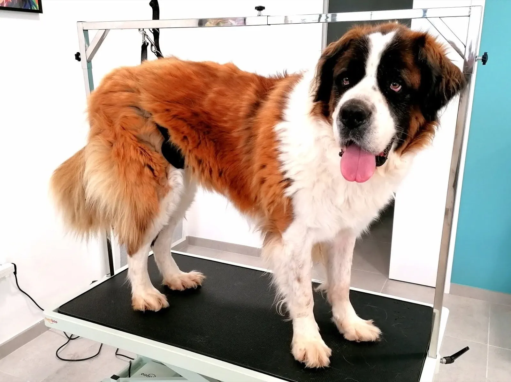
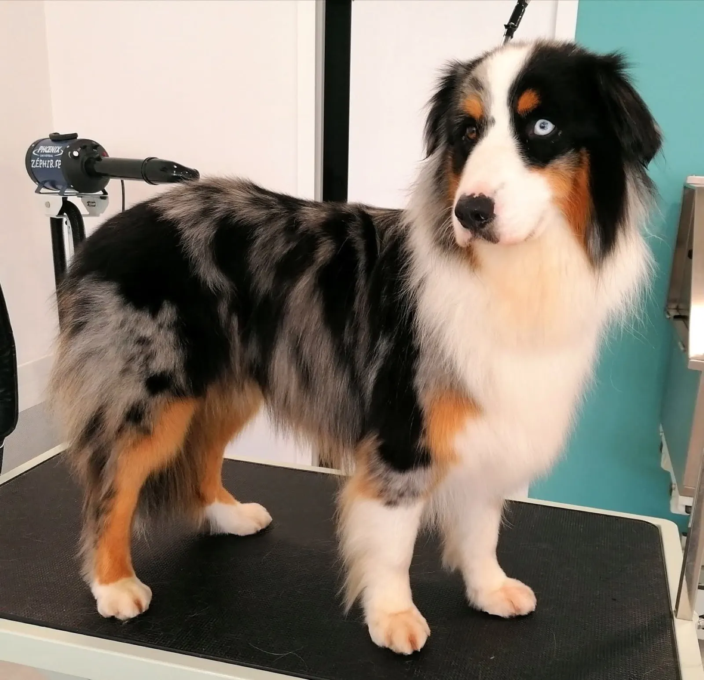
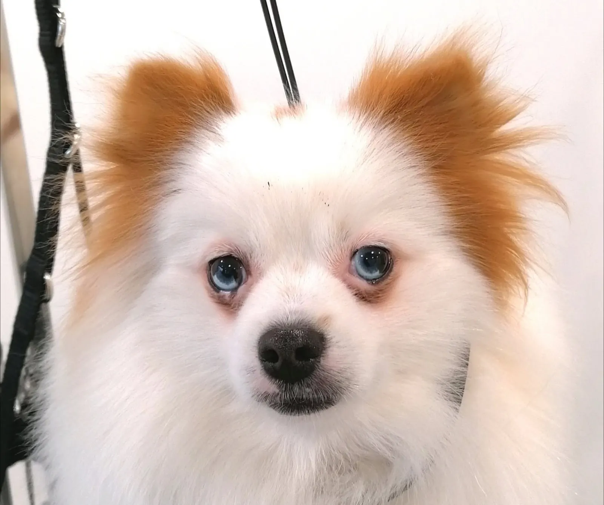
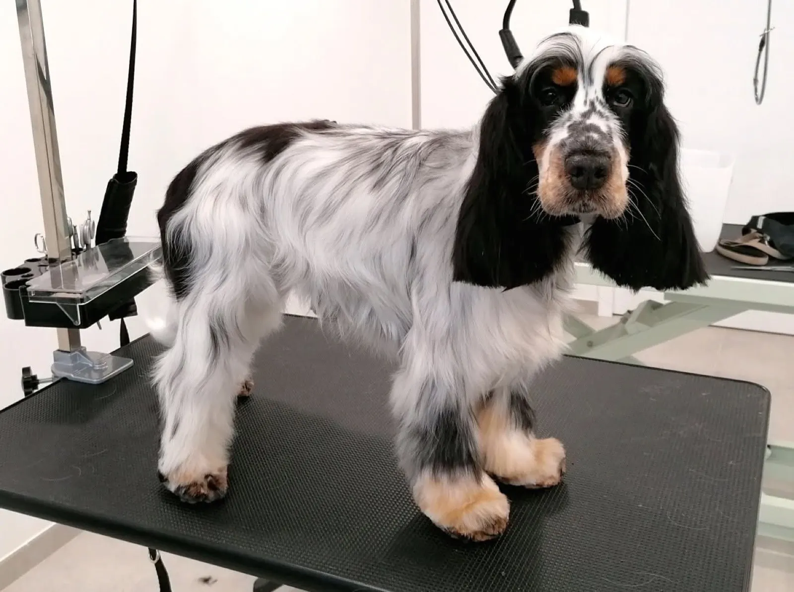
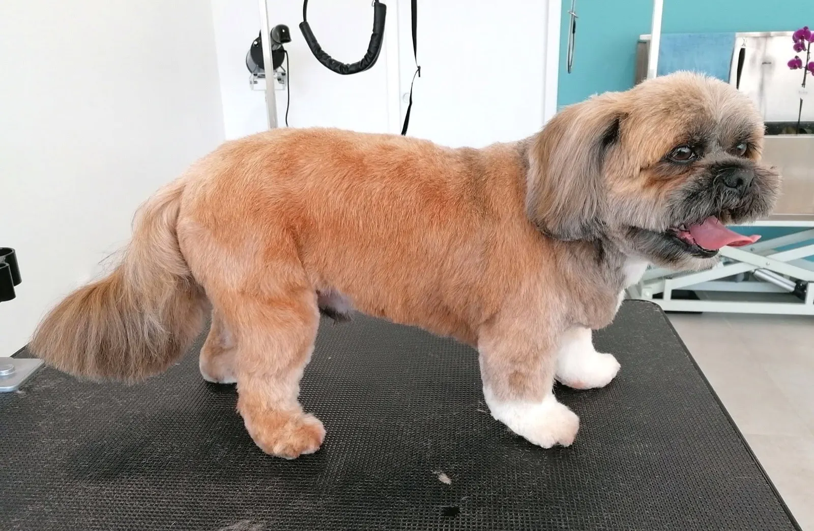
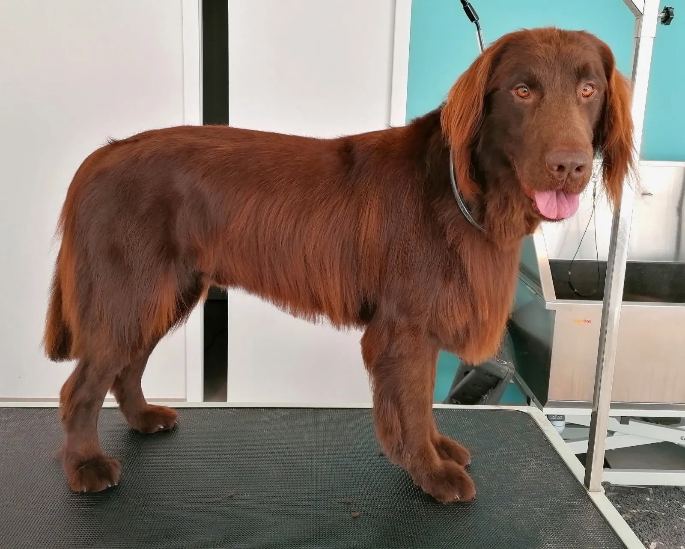
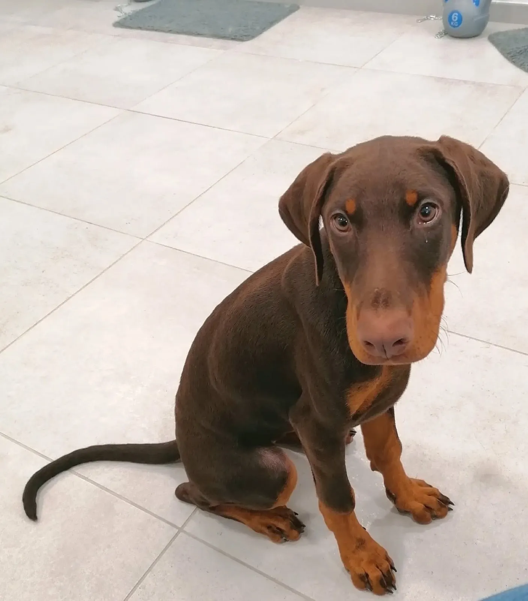
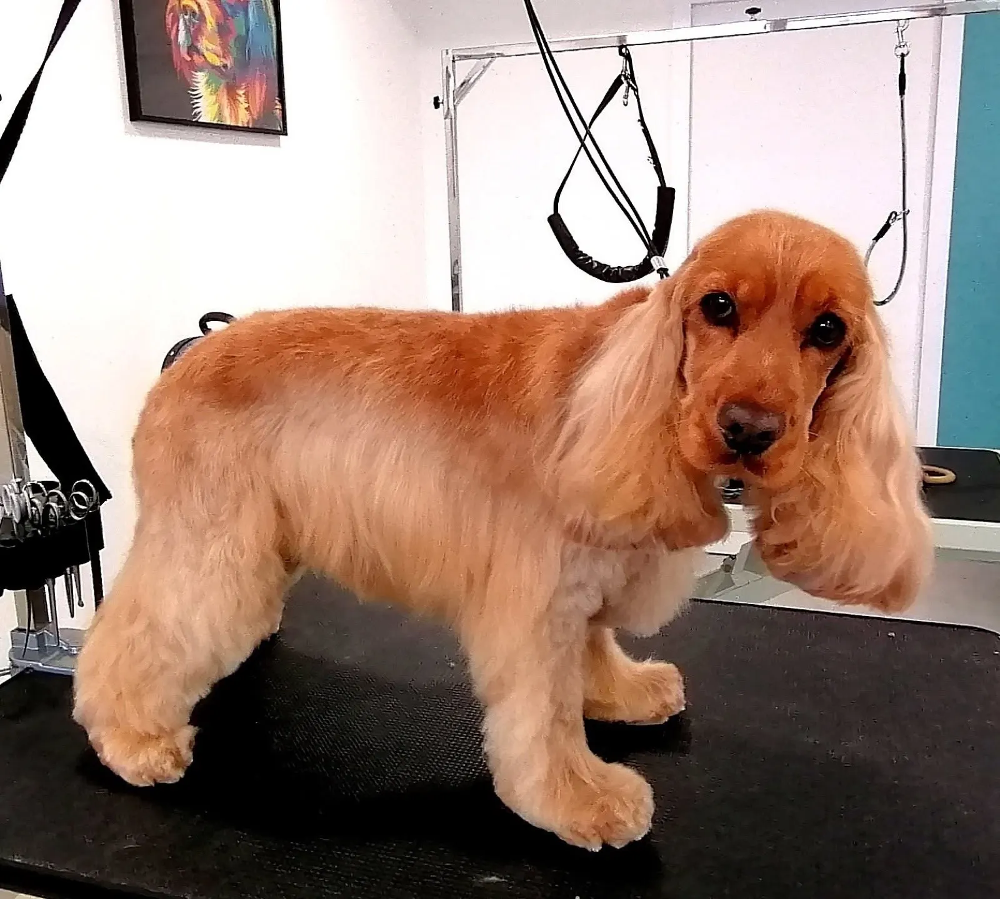
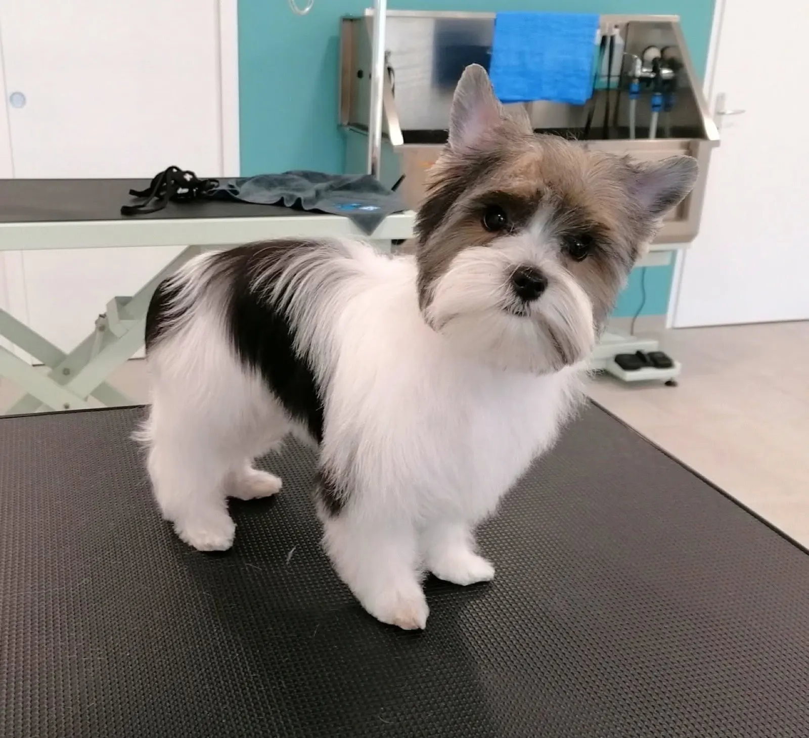
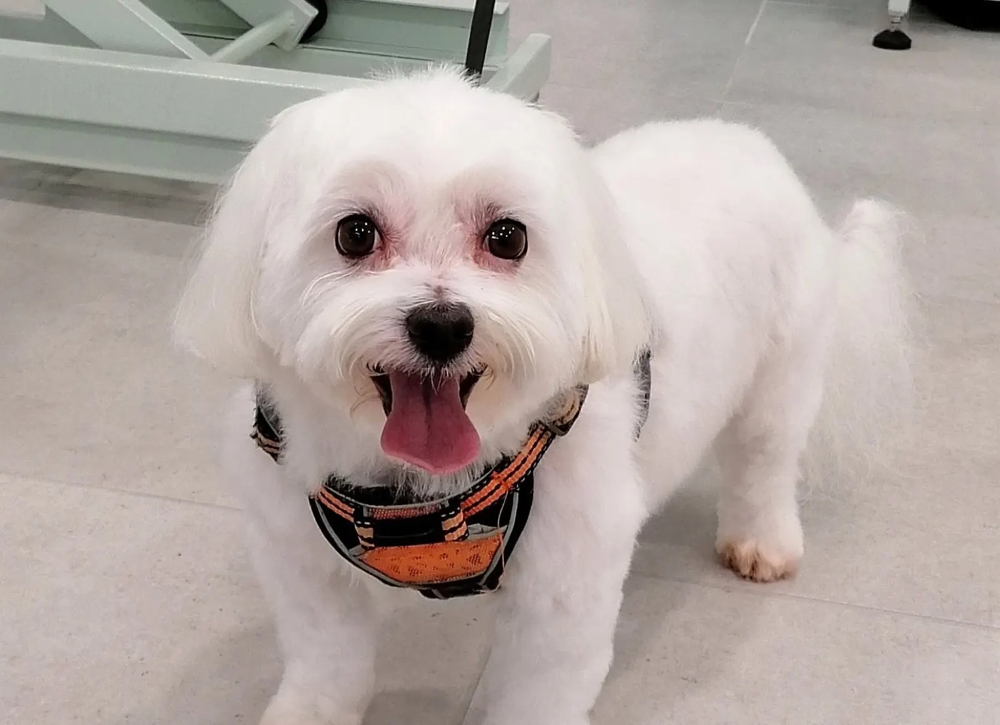

Le salon de toilettage de La Chaize-Giraud.
Toiletteuse depuis 24 ans, je mets mon expérience au service de vos compagnons à quatre pattes.
4,8sur 5, 49 avis Google
- Toiletteuse depuis 24 ans
- Salon à La Chaize-Giraud
- Du lundi au vendredi, 9 h à 18 h
- Shampooings naturels
- 4,8 sur 5 sur Google
Ils sont passés sur la table.
Coupe aux ciseaux, premier toilettage d'un chiot ou d'un grand chien : au salon, du petit biewer au saint-bernard.







Au salon
Un salon au cœur du bourg.
Le salon de toilettage se trouve place Émille Clément Amelineau, à La Chaize-Giraud. Baignoire, séchoir et table de toilettage : des plus petits aux plus grands, chaque chien y passe.
Des shampooings naturels
Le salon propose une gamme de shampooings naturels, aux extraits de plantes, hypoallergéniques et fabriqués en France.
Horaires et accès
Le salon est ouvert du lundi au vendredi. Un coup de fil pour convenir du toilettage.
- Lun9 h
à 18 h - Mar9 h
à 18 h - Mer9 h
à 18 h - Jeu9 h
à 18 h - Ven9 h
à 18 h - Samfermé
- Dimfermé

- Adresse
- 10, place Émille Clément Amelineau
85220 La Chaize-Giraud - Téléphone
- 02 51 22 87 93
- tigrou4@hotmail.com
- Ailleurs
- Facebook · Fiche Google